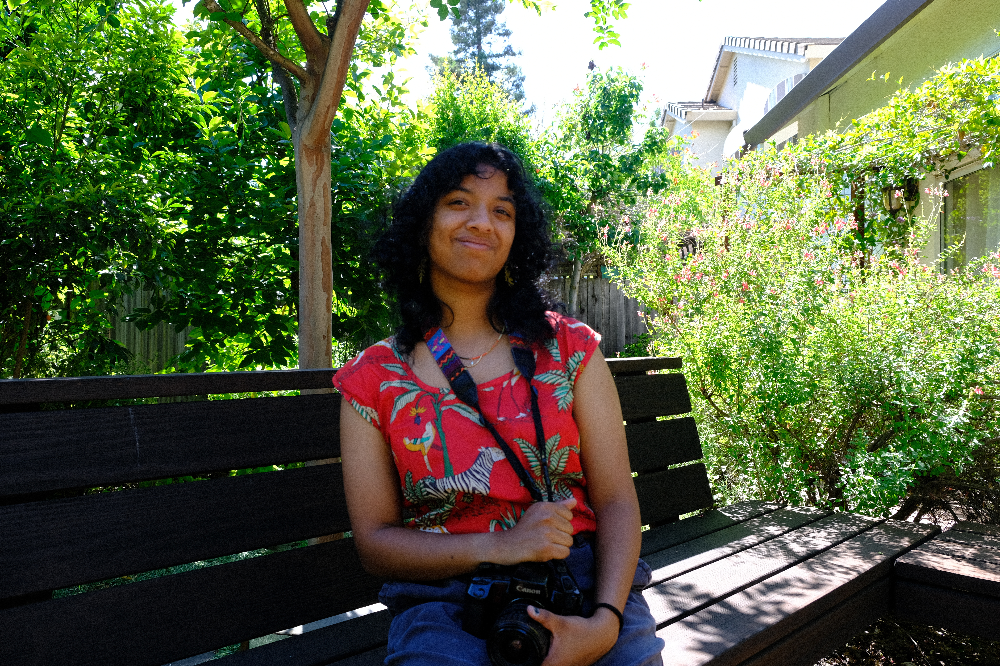
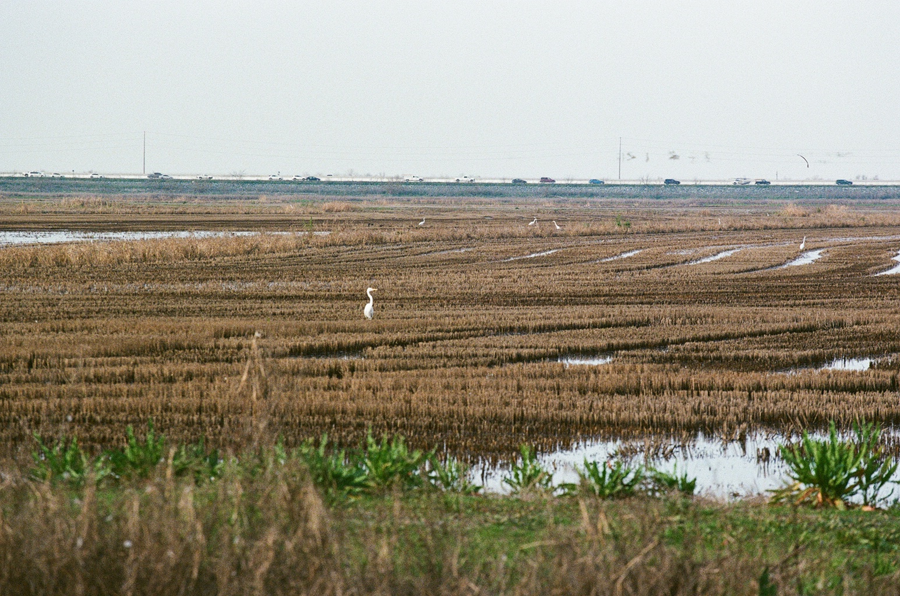
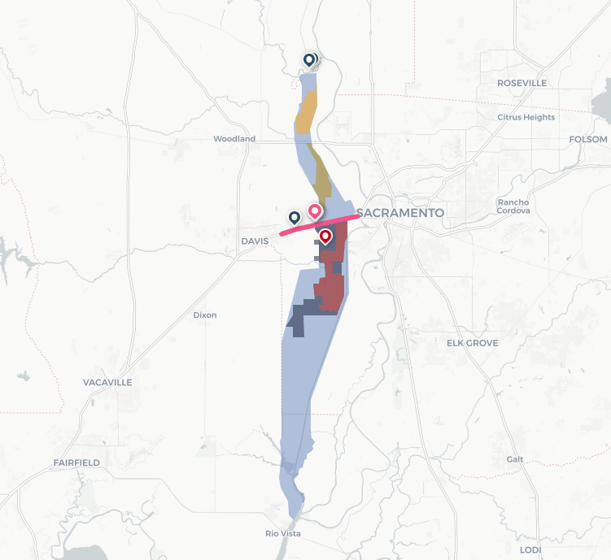
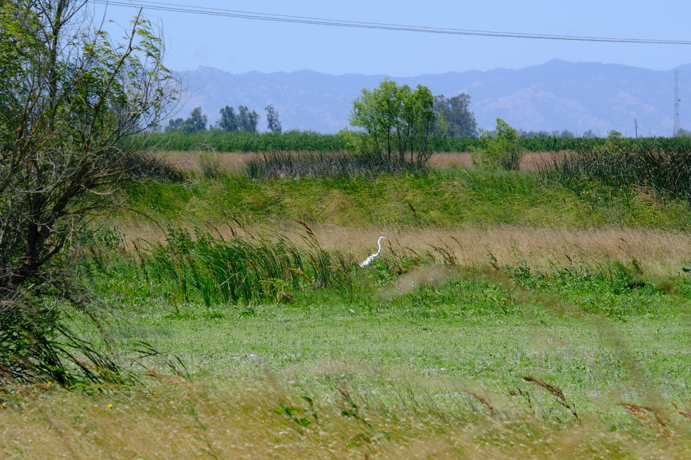
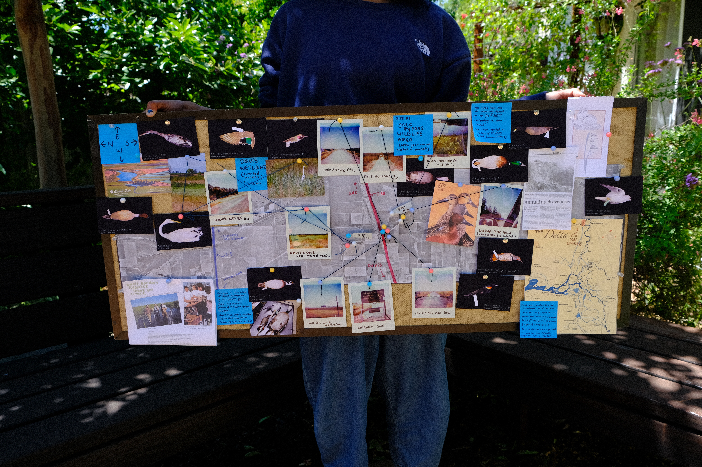
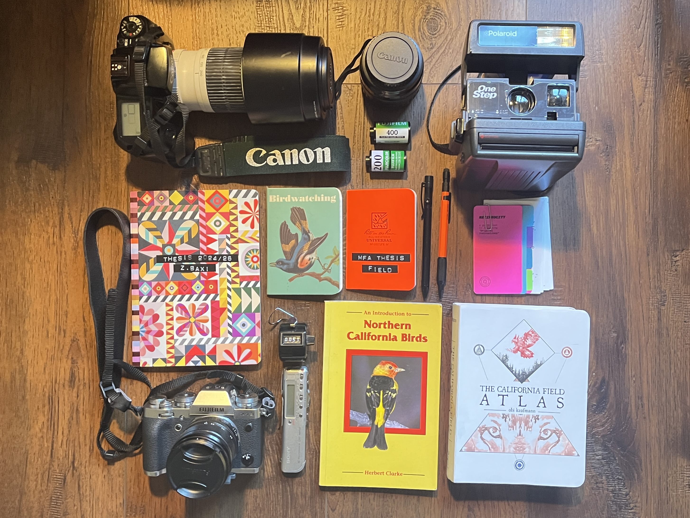

premise
Hi! I'm Zahra Baxi, an MFA Design student at UC Davis working across interactive design, social responsibility, and human-centered design. I grew up in Davis almost my entire life, which means I spent years driving past the Yolo Basin without ever actually going in.
The basin sits about three miles from downtown Davis, right alongside I-80. For most people who live here, it's something you often glance at from the car window and maybe note the birds and the water when it floods. I was one of those people for a long time. I knew it vaguely as a birding spot, and because I didn't consider myself a birder, I filed it away as something that wasn't really for me.
When I came back to Davis for my MFA, I started encountering the basin from a completely different direction: through environmental design, water policy, and conversations with people who knew it deeply. Ecologists, farmers, wildlife managers. People knew the basin as not a backdrop but a working system. I started going out there in January 2026 and kept going back across conditions and seasons, each time seeing something I hadn't noticed before.


"This field is complex. The same field holds floodwater in January, rice in July, and birds all year."
field notes, Yolo Basin
This thesis grows directly out of that experience of visting the basin through slow discovery. It's about a place most people overlook and what it takes to actually see it. The basin floods every winter to protect Sacramento. It grows rice every summer that feeds the valley. It hosts hundreds of thousands of migratory birds on the Pacific Flyway. These aren't separate facts about three different places, they happen in the same 59,000 acres, often at the same time. They depend on each other in ways that aren't obvious until you start looking closely.
The design question I kept returning to was: how do you represent a place that is genuinely multiple things at once, without collapsing it into something simpler than it actually is? This site is my attempt at an answer.
the place

The Yolo Bypass stretches 41 miles along the Sacramento River, but most people experience it as a blur of brown and green seen through a car window on the highway. From I-80, you're crossing it on a causeway that's one of the longest overwater highways in the country. What looks like empty wetland from up there is actually one of the most carefully managed landscapes in California.
The bypass was built in the 1910s as a flood relief valve. When the Sacramento River runs high enough in winter, water spills over the Fremont Weir at the north end and fills the basin, protecting Sacramento. When the water recedes in spring, the same land becomes one of the most productive agricultural zones in Yolo County. About 16,000 of those 59,000 acres are managed as wildlife habitat by the California Department of Fish and Wildlife.
The bypass exists because of a 1862 flood that nearly destroyed Sacramento. It's a pressure relief valve for the Sacramento River, intentionally flooded every winter to protect 500,000 people downstream. The Fremont Weir, a 1.8-mile concrete structure at the north end, is the gate that lets it happen.
When the fields flood, the basin transforms quickly. Within days, invertebrates emerge, fish move in, and migratory birds start showing up. The temporary wetlands created by winter flooding support over 200 bird species, including species that travel from as far as the Arctic and Patagonia.
Rice farming here is part of what makes it function. Post-harvest flooding of rice fields is a standard practice, and state programs pay farmers to maintain that water for wildlife. The leftover grain feeds waterfowl. The flooded stubble grows the invertebrates that shorebirds depend on.
The Yolo Basin sits on the Pacific Flyway, one of four major migratory corridors in North America. Hundreds of thousands of birds stop here every year on their way between Alaska and Central America. In a wet winter, pintail flocks can reach 50,000 birds. Sandhill cranes roost in groups of 2,000 to 8,000.


the question
The Yolo Basin is a living landscape where flood, food, and flight intersect across every season. Design can make that story visible.
This thesis looks at how information and interactive design can communicate complex ecological systems to public audiences. The basin functions simultaneously as flood infrastructure, agricultural land, and critical migratory bird habitat along the Pacific Flyway. Those three roles don't take turns, they layer on top of each other shifting with the seasons. Most people who drive past on I-80 have no idea any of it is happening.
The project applies a planet-centered design framework, one that puts the ecosystem at the center of the work rather than treating it as backdrop. Through site observation, spatial mapping, literature review, photography, and environmental data collection, the work translates that research into experiences people can actually encounter: a website, a poster series, literature review zines, and a physical exhibition. The exhibit is open at the Manetti Shrem Museum at UC Davis from June 4th til June 20th 2026.
How can design foster ecological awareness, participatory engagement, and emotional connection to a place most people only ever drive past?
method
-
01
field observation
Multiple visits to the basin starting on January 2026. I documented the different conditions such as light, water levels, and wildlife across different times of day and different weather. I kept field notebooks throughout and took photographs at each visit. These notes became the source material for the observations section of this site.
-
02
research & data collection
I gathered eight years (2018-2025) of primary data from Yolo County and basin-specific sources: flood inundation data from the CA Department of Water Resources and the Delta Stewardship Council, bird checklist data from Cornell Lab's eBird (Hotspot L443535), and rice acreage and value data from the Yolo County Agricultural Commissioner's Annual Crop Report. All data is Yolo County or Yolo Basin only. This data comes form public datasets such as API keys or public government pdf datasets.
-
03
systems mapping
I built layered spatial maps showing how land use, habitat zones, and restoration sites overlap in the same physical space, without separating them into discrete views. The goal was to keep the complexity visible rather than editing it into categories. The interactive map on this site is the output of that process.
-
04
interaction & visual design
The final design challenge was making all of this data feel like something you move through, not just something you read. I designed the site so you encounter the systems page after the map, and the observations after the systems, each layer building on the last.


thesis
Can design hold complexity without resolving it, and can that actually change how someone relates to a place?
This project uses interactive and information design to represent the Yolo Basin as a genuinely multiple landscape: flood infrastructure, working farmland, and critical wildlife habitat occupying the same space at the same time. The argument is that showing this overlap, rather than choosing a single frame, can shift how people understand and relate to a place they usually experience only from a distance.
The project is grounded in eight years of real data from Yolo County and basin-specific sources, combined with direct field observation across multiple seasons. The design challenge was not to simplify that data but to make it feel navigable. Something you move through over time rather than read all at once.
The overlapping uses of the Yolo Basin aren't to show that the space has contradictions or conflicts but instead that the require one another to survive as a system. They are how the place actually functions. Flood control creates the conditions for wildlife habitat. Rice agriculture sustains the post-harvest wetlands that birds depend on in winter. The water that protects Sacramento is the same water that brings the pintails back every November.